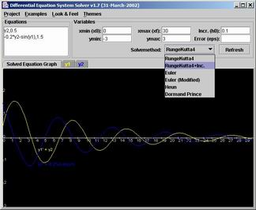

|  |
DESSolver v1.7
|
| [ Start Java Applet ] - [ Start as Java Application ] - [ Download ] | |
Starting as a ApplicationTo start DESSolver as a standalone application you need to download the installation archive which you can find in the download section of this document. Installation as a standalone application should normally very easy as long as you already have a preinstalled java runtime environment (JRE) on the operating system you are actually using. If you need to install the java environment first, please refer to http://java.sun.com/j2se/ for any further information.After downloading the installation zip archive you can extract the archives content to a directory of your choice. We have provided and included a startup-script for Linux (bash) and Windows (bat) which you should be able to execute. This script should automatically start the application with all necessary data. DownloadDisclaimerThe Authors, assumes no responsibility for errors or omissions in these materials.THESE MATERIALS ARE PROVIDED "AS IS" WITHOUT WARRANTY OF ANY KIND, EITHER EXPRESS OR IMPLIED, INCLUDING BUT NOT LIMITED TO, THE IMPLIED WARRANTIES OF MERCHANTABILITY, FITNESS FOR A PARTICULAR PURPOSE, OR NON-INFRINGEMENT. The Authors further does not warrant the accuracy or completeness of the information, text, graphics,links or other items contained within these materials. The Authors shall not be liable for any special, indirect, incidental, or consequential damages, including without limitation, lost revenues or lost profits, which may result from the use of these materials. The information on this server is subject to change without notice and does not represent a commitment on the part of the Authors in the future.
Usage / Copyright
This program is free software; you can redistribute it and/or modify
it under the terms of the GNU General Public License as published by
the Free Software Foundation; either version 2 of the License, or (at
your option) any later version.Precompiled Java binaries (JAR Archive): dessolver_1_7.jar - Version 1.7 - (142 KB) You can install the binary package into any directory of your choice. SourcecodeAs we are publishing this application under the GNU General Public License (GPL) we are also shipping it with the latest sourcecode. In the following archive you should find all necessary source files ordered in package directories. It also includes the full JavaDoc documentation Doclet. Please use it wise.Sourcecode distribution: dessolver_1_7-src.zip - Version 1.7 - (513 KB) |
| Copyright ©`2002 by Jens Langner | 31st March 2002 |
{kind=link}